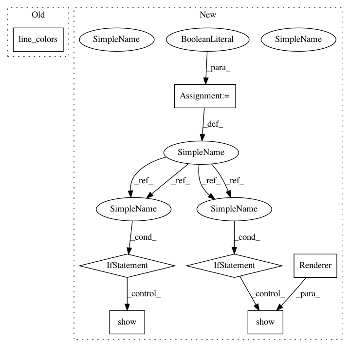

aac7b54c8d6957786a9aa70e896cef10fe0ab9fe,doc/examples/tracking_pft.py,,,#,39
Before Change
save_trk("pft_streamline.trk", streamlines, affine, shape)
renderer.clear()
renderer.add(actor.line(streamlines, cmap.line_colors(streamlines)))
window.record(renderer, out_path="pft_streamlines.png", size=(600, 600))
After Change
// Enables/disables interactive visualization
interactive = False
import numpy as np
from dipy.data import (read_stanford_labels, default_sphere,
read_stanford_pve_maps)
from dipy.direction import ProbabilisticDirectionGetter
from dipy.io.streamline import save_trk
from dipy.reconst.csdeconv import (ConstrainedSphericalDeconvModel,
auto_response)
from dipy.tracking.local import LocalTracking, ParticleFilteringTracking
from dipy.tracking.streamline import Streamlines
from dipy.tracking import utils
from dipy.viz import window, actor, colormap, have_fury
img_pve_csf, img_pve_gm, img_pve_wm = read_stanford_pve_maps()
hardi_img, gtab, labels_img = read_stanford_labels()
data = hardi_img.get_data()
labels = labels_img.get_data()
affine = hardi_img.affine
shape = labels.shape
response, ratio = auto_response(gtab, data, roi_radius=10, fa_thr=0.7)
csd_model = ConstrainedSphericalDeconvModel(gtab, response)
csd_fit = csd_model.fit(data, mask=img_pve_wm.get_data())
dg = ProbabilisticDirectionGetter.from_shcoeff(csd_fit.shm_coeff,
max_angle=20.,
sphere=default_sphere)
seed_mask = (labels == 2)
seed_mask[img_pve_wm.get_data() < 0.5] = 0
seeds = utils.seeds_from_mask(seed_mask, density=2, affine=affine)
CMC/ACT Tissue Classifiers
==========================
Continuous map criterion (CMC) [Girard2014]_ and Anatomically-constrained
tractography (ACT) [Smith2012]_ both uses PVEs information from
anatomical images to determine when the tractography stops.
Both tissue classifiers use a trilinear interpolation
at the tracking position. CMC tissue classifier uses a probability derived from
the PVE maps to determine if the streamline reaches a "valid" or "invalid"
region. ACT uses a fixed threshold on the PVE maps. Both tissue classifiers can
be used in conjunction with PFT. In this example, we used CMC.
from dipy.tracking.local import CmcTissueClassifier
voxel_size = np.average(img_pve_wm.header()["pixdim"][1:4])
step_size = 0.2
cmc_classifier = CmcTissueClassifier.from_pve(img_pve_wm.get_data(),
img_pve_gm.get_data(),
img_pve_csf.get_data(),
step_size=step_size,
average_voxel_size=voxel_size)
// Particle Filtering Tractography
pft_streamline_generator = ParticleFilteringTracking(dg,
cmc_classifier,
seeds,
affine,
max_cross=1,
step_size=step_size,
maxlen=1000,
pft_back_tracking_dist=2,
pft_front_tracking_dist=1,
particle_count=15,
return_all=False)
streamlines = Streamlines(pft_streamline_generator)
save_trk("tractogram_pft.trk", streamlines, affine, shape)
if have_fury:
r = window.Renderer()
r.add(actor.line(streamlines, colormap.line_colors(streamlines)))
window.record(r, out_path="tractogram_pft.png",
size=(800, 800))
if interactive:
window.show(r)
.. figure:: tractogram_pft.png
:align: center
**Corpus Callosum Particle Filtering Tractography**
// Local Probabilistic Tractography
prob_streamline_generator = LocalTracking(dg,
cmc_classifier,
seeds,
affine,
max_cross=1,
step_size=step_size,
maxlen=1000,
return_all=False)
streamlines = Streamlines(prob_streamline_generator)
save_trk("tractogram_probabilistic_cmc.trk", streamlines, affine, shape)
if have_fury:
r = window.Renderer()
r.add(actor.line(streamlines, colormap.line_colors(streamlines)))
window.record(r, out_path="tractogram_probabilistic_cmc.png",
size=(800, 800))
if interactive:
window.show(r)
.. figure:: tractogram_probabilistic_cmc.png
:align: center
In pattern: SUPERPATTERN
Frequency: 3
Non-data size: 7
Instances
Project Name: nipy/dipy
Commit Name: aac7b54c8d6957786a9aa70e896cef10fe0ab9fe
Time: 2019-07-21
Author: girard.gabriel@gmail.com
File Name: doc/examples/tracking_pft.py
Class Name:
Method Name:
Project Name: nipy/dipy
Commit Name: c2cfaf314a381e520883eba2d965cd93fd5572e0
Time: 2019-07-21
Author: girard.gabriel@gmail.com
File Name: doc/examples/tracking_bootstrap_peaks.py
Class Name:
Method Name:
Project Name: nipy/dipy
Commit Name: d938f476feee0efd9045bc8f9bb1fe76b9898fae
Time: 2018-01-10
Author: skab12@gmail.com
File Name: doc/examples/introduction_to_basic_tracking.py
Class Name:
Method Name:
Project Name: nipy/dipy
Commit Name: aac7b54c8d6957786a9aa70e896cef10fe0ab9fe
Time: 2019-07-21
Author: girard.gabriel@gmail.com
File Name: doc/examples/tracking_pft.py
Class Name:
Method Name: